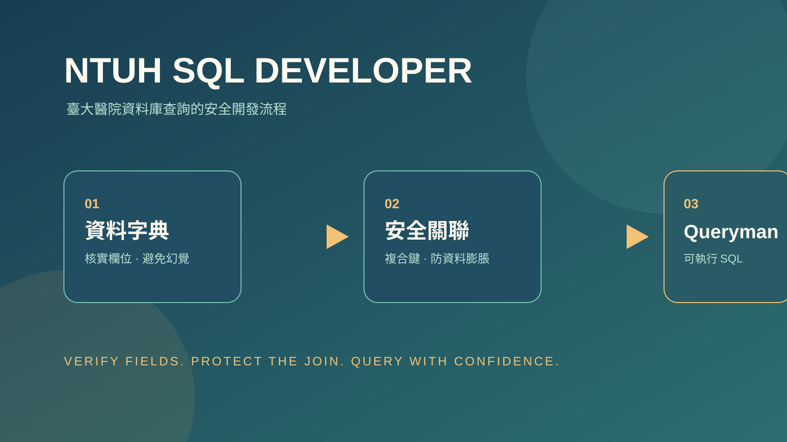

技能包 · 生產力工具
NTUH SQL 開發顧問
2026.08 · 個人專案

FIG. 27 — 產品主畫面
關於這個作品
NTUH SQL 開發顧問是一套面向臺大醫院 HIS／MIS 與資料倉儲環境的 SQL 工作流程。它將資料字典核實、複合鍵關聯、申報資料邏輯與 Queryman／Oracle 語法規範整合在同一個查詢前檢查流程中，協助降低欄位誤用與一對多串接造成的統計膨脹。
作品亮點
先核實資料字典，再使用門急診、住院、醫令、病患與員工等核心資料表
以複合關聯鍵與 SubQuery／DISTINCT 防止醫令明細放大主檔統計
內建總院過濾、民國年與年齡計算等醫療業務規則
遵守 Queryman／Oracle SQL 的註解、中文別名與 GROUP BY 寫法